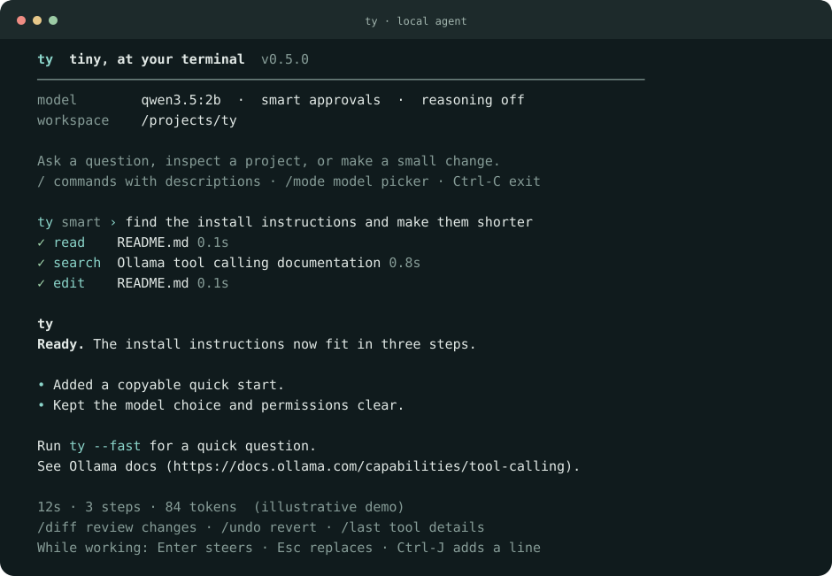

ty
Tiny, at your terminal. A quiet local agent for small coding tasks, quick questions, and focused web research.

View source and quick startRead the efficiency notes
ty keeps the useful parts of an agent session visible: the answer, the files it touches, and the actions it takes. It runs in one Python file with no runtime dependencies, using a local model through Ollama.
Small prompts, useful tools
- Read, search, edit, and review files, with compact tool activity and details on demand.
- Search the web and retrieve relevant source passages with a lightweight lexical ranker.
- Choose installed models, steer a running task, resume sessions, and inspect or undo file-tool changes.
Python 3.11+ and Ollama are required. The README covers installation, model selection, and approval modes. Run ty --demo to preview the interface without a model.